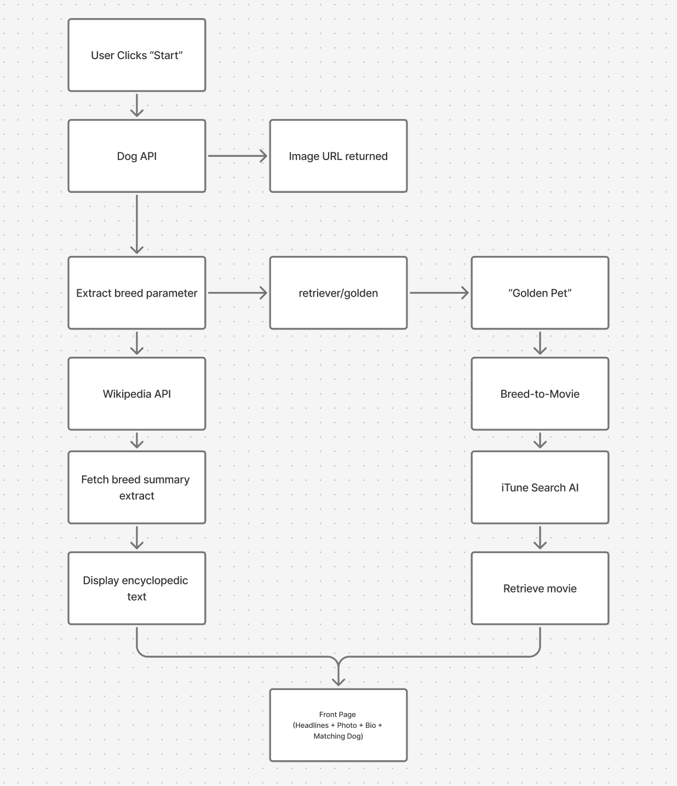

A Rube Goldberg press made of web services
The Daily Dog is a digital Rube Goldberg machine constructed from interconnected web services. A single user click triggers a sequential domino effect: a random canine image is retrieved, its breed name is parsed directly from the URL payload, handed off to Wikipedia to fetch encyclopedic context, and simultaneously used to query a film database. The result is a dynamically assembled newspaper front page where a discovered dog breed directly dictates the feature film broadcast in the entertainment section.

The system passes different types of data between web services, including image URLs, dog breed names (such as "husky" or "dalmatian"), Wikipedia descriptions, and movie information such as titles, genres, release years, posters, and video previews.
I connected three services: Dog CEO API, Wikipedia API, and iTunes Search API. What interests me is how a randomly generated dog image can lead to unexpected connections with films. By using the dog breed as a search term, the system brings together information from unrelated sources and turns it into a newspaper issue.
The interaction begins with a single button, "Stop the Presses ▸ Start." Once clicked, it triggers a chain of requests between the three APIs. The final result is a dynamically generated newspaper front page, where the selected dog determines the main story and the film featured in the entertainment section.